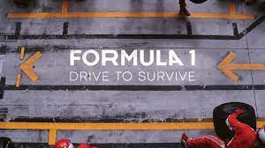

Formula 1: Jazda o życie
Formuła 1: Drive to Survive to serial dokumentalny wyprodukowany we współpracy między Netflix i Formułą 1,
aby zajrzeć za kulisy kierowców i wyścigów Mistrzostw Świata Formuły 1.
Wciągający 10-odcinkowy serial na wysokich obrotach. Pierwsza produkcja, która pokazuje,
jak wyglądają kulisy największych wyścigów samochodowych na świecie.
Serial twórców filmów "Senna" i "Amy" odkrywa prawdziwe oblicze tego sportu.
Okazuje się, że nie chodzi w nim tylko o zajęcie pierwszego miejsca. To także gra o pozycję w wartym miliardy dolarów biznesie.

Sezon 3:
W najbardziej dramatycznym z dotychczasowych sezonów fani serialu kolejny raz zajrzą za kulisy Formuły 1, by zobaczyć,
jak kierowcy i ich zespoły walczą o zwycięstwo w roku niepodobnym do żadnego z poprzednich.
Sezon 2020 został brutalnie przerwany przez pandemię COVID-19 i po odwołanym w ostatniej chwili wyścigu w Australii kierowcy wrócili
na tor dopiero kilka miesięcy później w Austrii. Sportowych emocji również było pod dostatkiem -
cały czas oglądaliśmy dynamiczne starcia i ostrą rywalizację, a choć wygrał po raz siódmy Lewis Hamilton,
to na podium wielokrotnie stawali ci, na których mało kto stawiał.